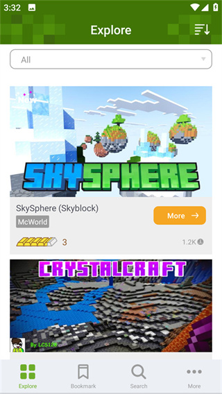

MCPE Addons 到底值不值花钱？这笔模组安装账算给你看
装 Minecraft 基岩版的 Add-On 要不要掏钱？免费包和付费包差在哪？轻度玩、主力玩、重度做图的成本各是多少？看完你就知道这钱该花还是不该花。
它到底值不值得掏钱？
先把话说死：MCPE Addons 这款应用本身是免费的，你可以从addons官网或者应用商店直接装，不用花一分钱。但真正让人纠结的，是它背后那堆 Add-On——也就是 Minecraft 基岩版的行为包和资源包。有些免费，有些要花钱买，质量参差不齐，而且加起来不是一笔小数目。
我最近花了两个周末，把市面上能找到的 Add-On 都扒了一遍，免费的、付费的、订阅的、买断的，折腾下来终于把这笔账算清楚了。下面我分三类人给你掰扯，你对照自己是哪种，三秒就能决定要不要掏钱。
先搞清楚：这套东西的付费结构
MCPE Addons 做的事情很简单：帮你把行为包和资源包装进 Minecraft 基岩版，让游戏里能跑模组、换贴图、加玩法。它自己不生产 Add-On，但它管的那些 Add-On，生态里有一套清晰的付费分层：
免费层：社区作者做的包，绝大多数是行为包（改怪物 AI、加新物品）和小体量资源包（改几种方块贴图）。免费包的问题很直接——更新不及时、Bug 多、有些作者做一半跑路就停更了。我见过一个"工业模组"，作者两年没更，现在跑在最新版 Minecraft 上直接闪退。
单次买断：精品 Add-On，一般在二十到六十块之间，买断终身。这类包通常有持续更新，作者维护着社区反馈，质量靠谱。比如一些知名的 RPG 模组包，内容量能顶好几个免费包，而且和 Minecraft 版本同步得很紧。
订阅制：这是最鸡贼的一档。有些作者做了"订阅解锁全部高级包"，按月或按年收费，听起来划算但你仔细算，一年订阅费够买三四个精品包了，而且订阅停了之前的包还能用——这就很微妙。

分三类人算账
轻度用户：偶尔想装个幸运方块
典型画像：手机上装着 Minecraft，朋友推荐了个好玩的 Add-On 想试试，但自己不太折腾，对模组生态也没什么概念。
免费版够用吗？完全够。免费的幸运方块、家具包、皮肤包多到你下不完，而且 MCPE Addons 的搜索和分类做得不错，搜个"Lucky Block"出来一堆，挑个评分高的装就行。
我给轻度用户算一笔时间账：装一个免费包大概 2 分钟——先下载好 MCPE Addons，然后打开它搜关键词、点安装按钮、回 Minecraft 激活行为包和资源包。这个流程走三遍你就熟了，之后装什么都顺手。
唯一要注意的：免费包踩坑概率高。我上周装了个"超级英雄"行为包，激活之后 Minecraft 直接崩了，重启进不去世界，最后是从备份恢复才救回来——所以开实验开关之前一定要先复制存档，这点别嫌麻烦，花 30 秒复制一份世界，翻车了删副本就行，主存档好好的。
轻度用户一分钱都不用花，把免费包里评分 4 星以上的挨个装一遍，足够你玩好几个月。
主力用户：日常换模组折腾
典型画像：MC 基岩版重度玩家，每周至少玩三四个小时，世界里建了不少东西，喜欢换着不同的模组玩法——今天开个工业模组，明天换个魔法题材，后天想玩恐怖地图。
主力用户的痛点是：免费包太多但好用的太少，而且同一个世界装多个免费行为包时容易冲突，导致游戏崩溃或功能失效。我自己就踩过坑，装了三个行为包之后，苦力怕的爆炸 AI 直接疯了，见什么炸什么。
这时候精品买断包的价值就出来了。一个四五十块的精品行为包，作者会帮你把兼容性处理好，而且有持续更新。我买过一个"现代都市"模组包，里面有二十多种新方块、十几种新工具，装到现在快半年了，作者每隔两三个月就更一次，还修了我反馈过的一个光照问题。
算一笔单位时间成本：一个 50 块的精品包，假设你玩它 50 小时才腻，那每小时花一块钱，比你花一下午去网上搜免费包、踩坑、卸载、重装、再踩坑——这个时间值多了。
主力用户值得花这笔钱。推荐策略：先把你最想玩的那个题材对应的精品包买断一两个，剩下的用免费包补缺口。别搞订阅制，性价比太低。
重度用户：做地图、做模组、搞创作
典型画像：你不是玩模组的人，是做模组的人。或者你是个地图作者，在给别人的服务器做定制玩法。你需要的不是装好别人的包，是理解 Add-On 的工作原理、能自己改 JSON 配置、能写 Beta APIs 脚本。
对这类人来说，MCPE Addons 本身的价值反而没那么大了——你可能更常用 Minecraft 自带的 Add-On 文件夹和行为包管理界面。但 MCPE Addons 的文档和社区资源对你有用，它的addons文档把 Beta APIs 的实验开关机制、资源包和行为包的配对规则、存档备份方法都讲得很清楚，比你自己翻 Minecraft 官方 wiki 效率高。
重度用户也不用花钱买 Add-On，你需要的是时间投入——学 Beta APIs 语法、研究资源包的 JSON 结构、写测试脚本。但如果你想支持某个你常用的免费包作者，或者想买个精品包当学习参考，那点钱随便花。
不花钱的替代方案
最后说说，如果你连一分钱都不想花，有没有别的路：
方案一：纯免费包。缺点是踩坑多、更新不及时，但优点是真的免费。建议找社区维护的免费包合集，那种有 Discord 群、有持续维护的，比作者个人发布的靠谱。
方案二：Minecraft 自带管理。基岩版自带 Add-On 管理界面，你可以手动把 .mcpack 文件拷到游戏文件夹里，然后在世界设置里激活。这个过程比用 MCPE Addons 麻烦，但完全免费，而且能直接看到文件结构，适合喜欢动手的人。
方案三：降低使用频率。不是天天换模组玩，而是选定一两个长期用的免费包，稳定了就不再折腾。这个策略对轻度用户尤其有效——你真的不需要手机里装二十多个 Add-On，能用上的永远只有那两三个。
结论：三秒对号入座
- 闭眼付：每周玩四小时以上、喜欢频繁换模组玩法的主力玩家，挑一两个你最常用题材的精品买断包，别搞订阅。
- 再等等：轻度玩家和还没搞清楚自己需求的人，先用免费包试三个月，等发现"免费的都不够用"了再考虑付费。
- 永远不用付：纯尝鲜的、自己动手改包的、或者就是想玩原版的——一分钱都别花，免费生态足够了。
哦对了，还有一个我踩过的坑提醒你：Beta APIs 实验开关是单向的，开了就关不掉。我曾经一时手贱给我建了半年的城市存档开了实验开关，现在成就全禁用了，而且关不回去——想回头只能从备份恢复。所以不管你是哪种用户，开实验之前先备份存档，这一条跟你花不花钱没关系，跟你想不想保住存档有关系。
如果你想自己动手写 Add-On 脚本或者研究 MCPE Addons 的完整参数配置，相关资料在 GitHub、Gitee、GitCode 这三个仓库都能拿到，根据你在国内还是国外选一个访问顺畅的就行。